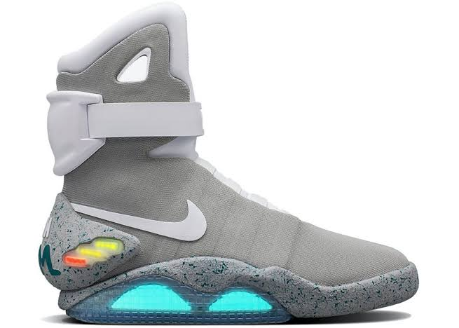

Les chaussures de Marty McFly dans Retour vers le futur 2 sont les mythiques Nike Mag, conçues en 1989 par le designer Tinker Hatfield à l'air futuriste qui se resserre automatiquement dans le film
| Nom | Image | Prix |
| Nike Mag |  | entre 30 000€ et 50 000€ |